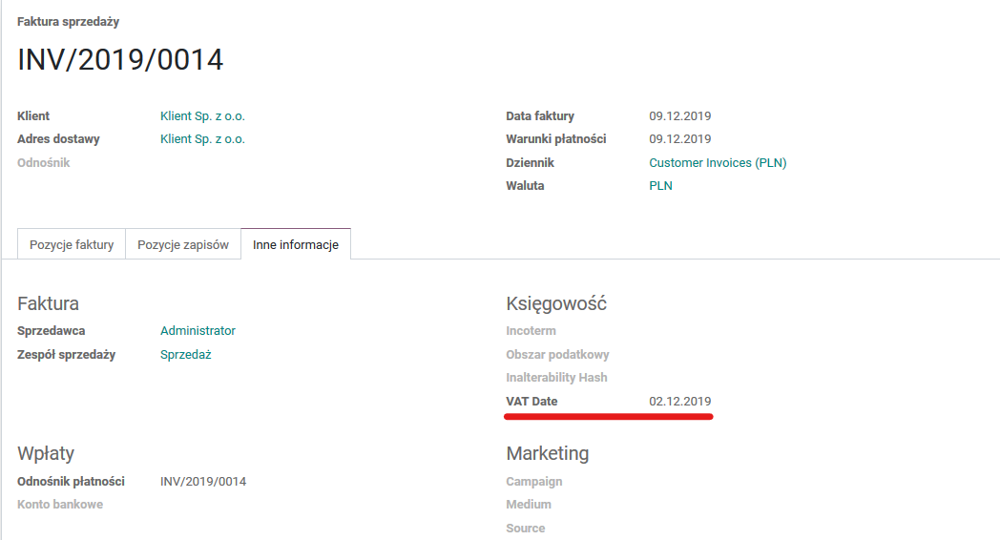
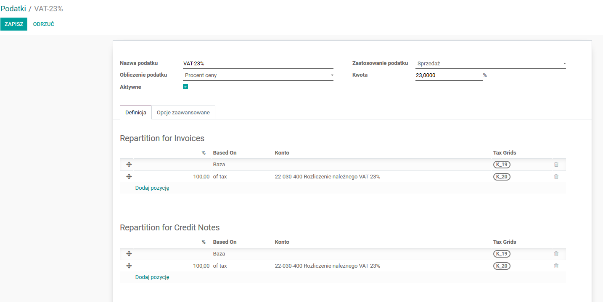
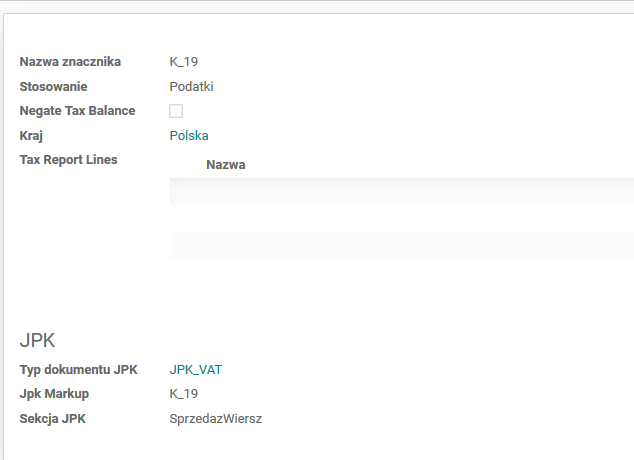
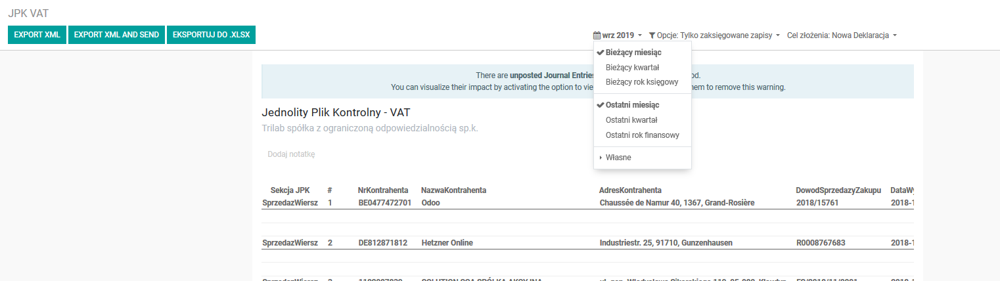
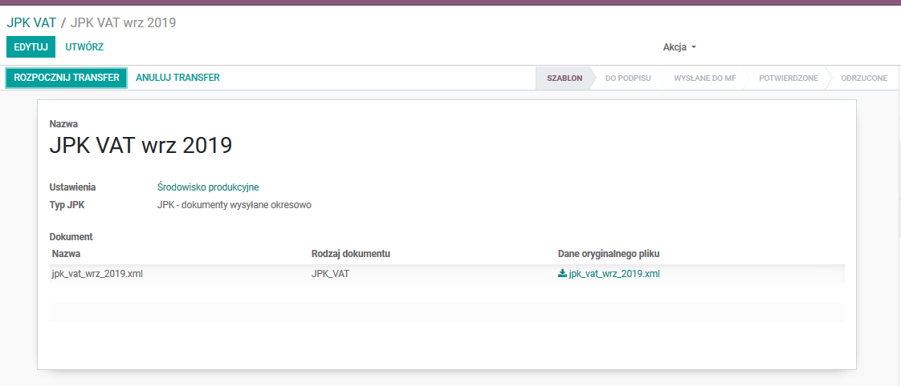
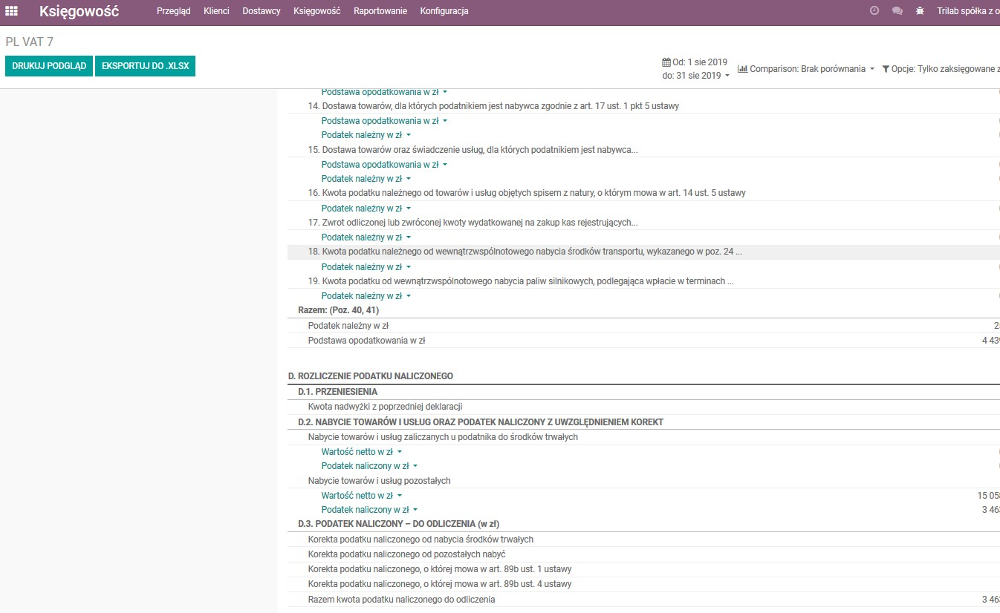

Moduł do generowania plików JPK VAT. Wraz z modułem Trilab JPK Transfer zapewnia pełną obsługę
procesu sprawozdawczość JPK VAT.
Źródłem danych do JPK VAT są zapisy księgowe z modułu Księgowość rozbudowane o dodatkowe pole
kwalifikujące dokumenty do okresu sprawozdawczego VAT
(jest to konieczne w przypadkach gdy okres kwalifikacji rachunkowej jest różny od
kwalifikacji podatkowej).

Mechanizm doboru danych jest elastyczny i parametryzowany – oznaczenie kwalifikacji dokumentów do poszczególnych pozycji/znaczników w JPK VAT bazuje na kodach podatku i ich tagach:
 
Mechanizm raportujący działa sposób analogiczny do Raportów Finansowych

i umożliwia:

Parametrami uruchomieniowymi są:
Dodatkowo (do czasu obwiązywanie JPK_VAT wersja 3 i sprawozdań VAT7 w ramach aplikacji zawarto dedykowany raport finansowy prezentujący dane zgodnie z układem VAT7 (z możliwością uzupełnienia interaktywnego PDF dostarczanego przez Ministerstwo):  Istnieje możliwość wykorzystania nowej w wersji 13 funkcjonalności Tax Report -> z automatycznym tworzeniem dziennika rozksiegowujacego zamknięcie kont VAT i rozliczneie z US.
UWAGA:
Wspiera wersję 15 Odoo.
English Description:
Module for generating JPK VAT XML files. Together with the Trilab JPK Transfer module provides full support for the JPK VAT reporting process.
The source data for JPK VAT are accounting entries from the Accounting module extended with an additional field - qualifying documents for the VAT reporting period (this is necessary in cases where the accounting qualification period is different from the tax qualification).
The data selection mechanism is flexible and fully parametrised - document qualifications for individual items/markers in JPK VAT is based on tax codes and their tags.
The reporting mechanism works in similar to to Financial Reports and enables:
The parameters are:
Additionally (until validity JPK_VAT version 3 and VAT7 report, the application includes a dedicated financial report presenting data in accordance with the VAT7 (to be entered into the interactive PDF provided by the Ministry). It is possible to use the new Tax Report functionality in version 13 -> with the automatic creation of a journal that closes VAT accounts and settlements with tax office.
Warning:
Supports Odoo version 15.